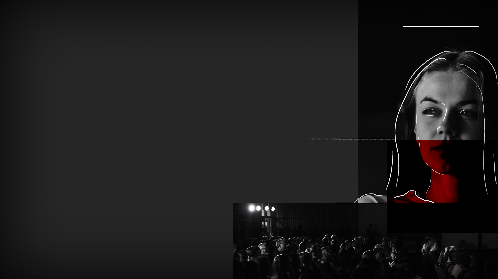

SPLITTED
SPLITTED

«Please, Nikki, let's go on the front rows. We are here early for a reason!»
There she goes, acting like a child.
We find two sits in the third row, right at the center of the isle. The room starts filling up pretty quickly, and as I turn around and look at all the faces that sorround me, I can't help but notice that not only our parents and grandparents (the few of them who are still alive) are here to listen to this priest; many young people like me are attending, alongside a substantial group of children. They have no reason to be here at all: they will only be fed with information they will not be able to understand, and they will interiorize it forever.